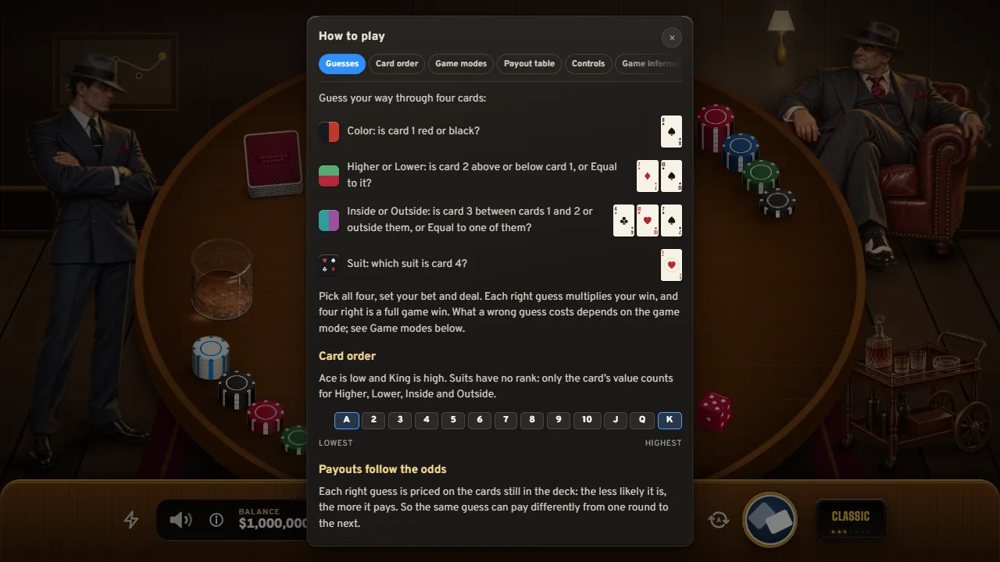

Ride The Bus
A four-guess card game for the Stake Engine platform. The maths and the client, built by one person.
In development, not yet released. Every frame on this page is captured from the running game.
Four guesses, made before the deal
The player picks all four guesses, then the cards turn one by one. A right guess carries the ride on; a wrong one ends it, keeping a share from the second card on.
Each combination of guesses is its own bet mode, with its own published table of outcomes.
- ColourRed or black.
- Higher or lowerThan the first card, or equal to it.
- Inside or outsideOf the first two cards, or equal to one of them.
- SuitOne of four.


Every multiplier comes from one equation
A guess that is right with chance p is priced so the expected change across the card is the same fixed decay, whether the guess was a coin flip or a long shot. No pick is worth more than another in expectation, and four cards compound to the target return.
A Python package solves every stage, generates the published books and reweights each mode's table so its recorded return lands on 96%.
p · m + (1 − p) · r = d
- p
- the chance the guess is right
- m
- the multiplier a right guess applies, solved for
- r
- what a miss keeps: nothing on card one, then 30% on Classic
- d
- the decay per card; four of them make 0.99
- 257
- published modes: four families of 64 playable combinations, plus Three of a Kind. Equal then Inside cannot happen, so 64, not 72.
- 96%
- recorded return, pinned on every one of the 257.
- 0.1×
- the step every payout floors to. Never rounded: rounding a fair 1.96× up to 2.0× would erase the margin.
The client's test suite replays every published book through its own arithmetic, so the figure on the screen and the figure the server settles can never disagree.
| Family | What changes | Highest multiplier |
|---|---|---|
| Second Chance | The first miss from card two keeps 50% and the ride goes on. | 585.2× |
| Classic | The base rules. | 1,354.2× |
| Last Stop | A right suit draws a ticket from a stack, 2× to 10×. | 4,301.9× |
| High Stakes | A miss keeps 15% instead of 30%. | 2,237.3× |
| Three of a Kind | Three cards from a twelve-card deck must share a rank. Costs 250× the base bet. | 4,583.3× |
The client, frame by frame
A Svelte 5 client that replays each round from its book. The win takeover is a departures board: the tier rolls like a destination blind through Big, Huge, Mega, Epic and Max, and a bus rides the route underneath to the stop reached.
The back room
Two painted characters share the table's room: the Floorman, standing, and the Boss in the corner with his cigar. A rare win moves them, and they never react before the cards show it. The lights come up as the help screen closes.
- 17 languagesEvery string translated, Arabic laid out right to left, every family name fitted to its sign.
- Sound written in codeEvery sound effect is synthesised in the browser through one audio graph. One produced music bed loops under them.
- Seven target screensFrom a 320px phone to a desktop window, every layout change checked at all seven.
How it was built
- Maths in PythonA package that solves the prices and generates every mode's published book.
- Client in Svelte 5Turns each book into the round on screen; its payout arithmetic is checked against every book.
- About 1,000 testsIncluding a parity suite that replays every published mode.
- SoloOne developer, with Claude Code as the pair. Built for the Stake Engine platform.
In development, not yet released.